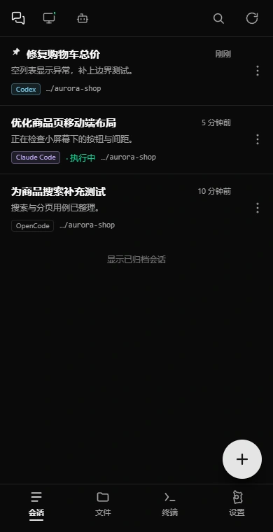
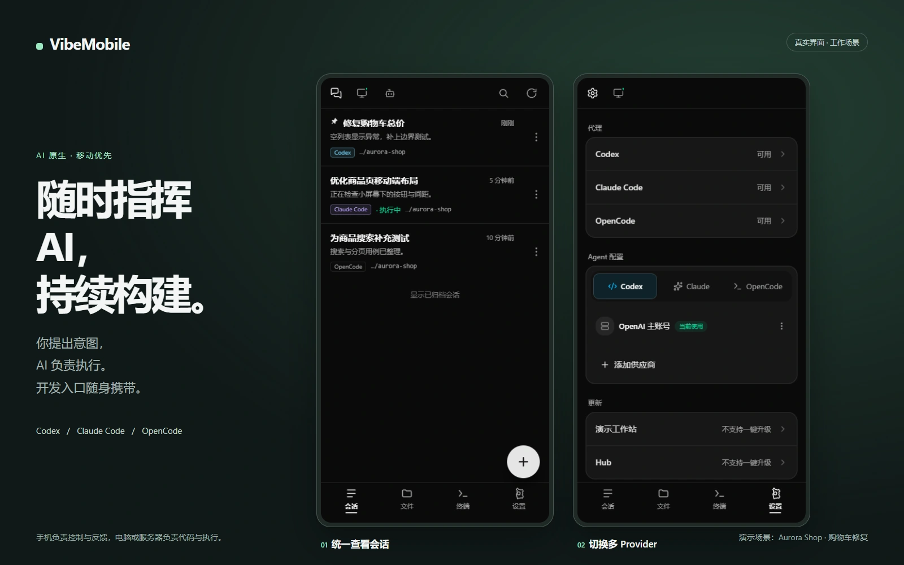
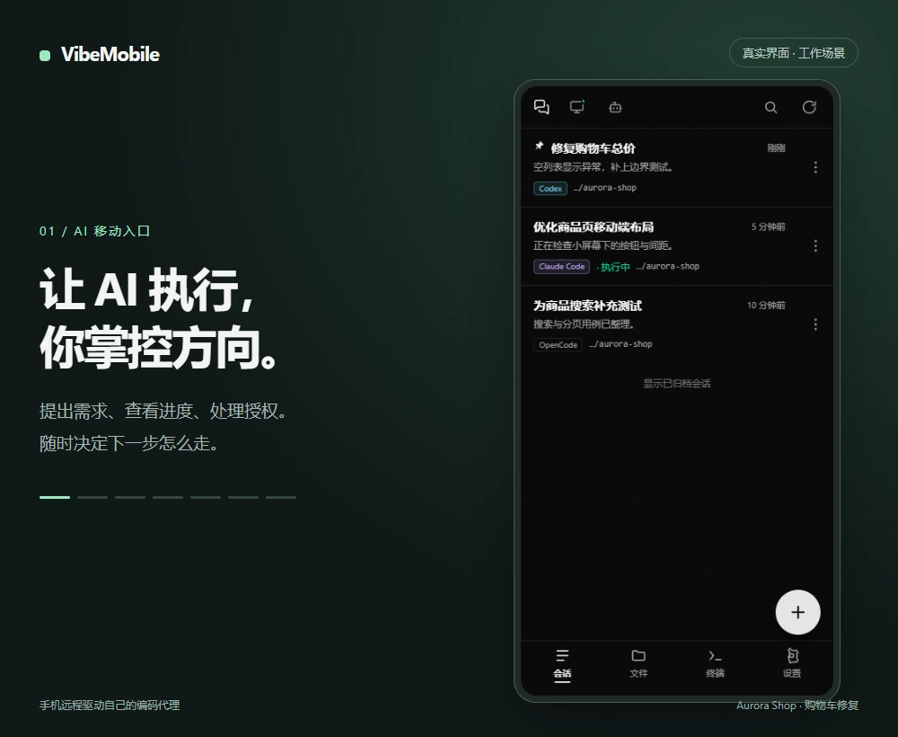
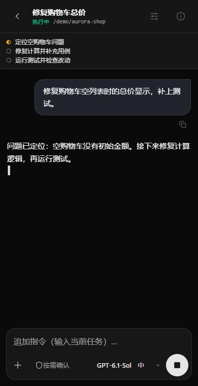
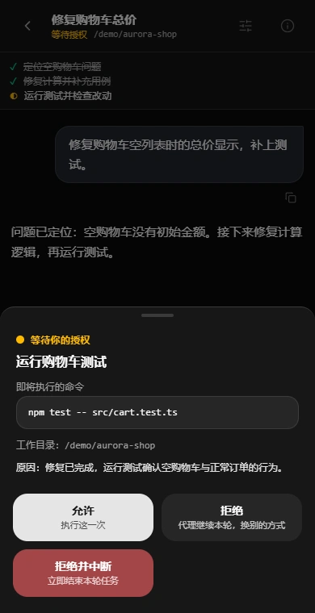
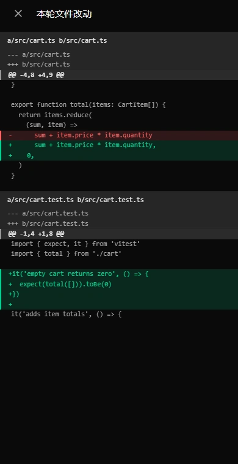
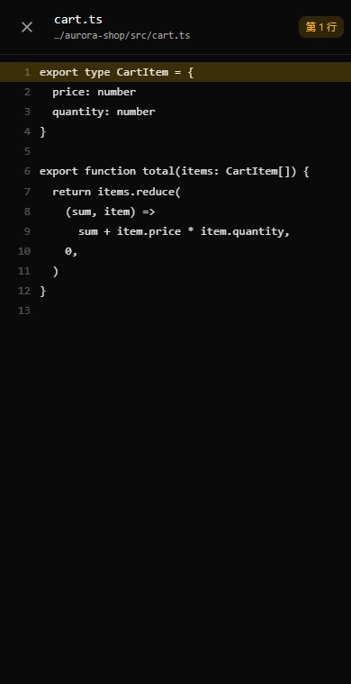
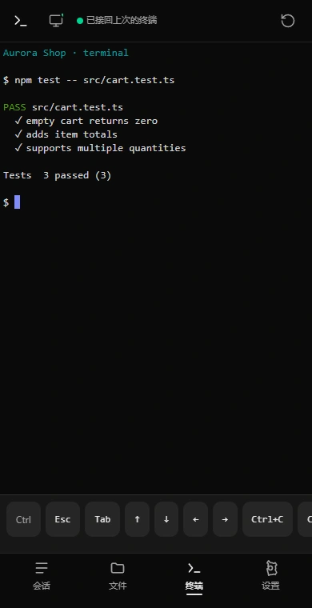
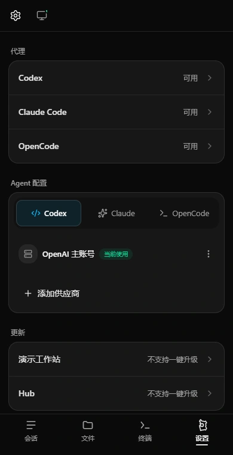

01 / AI 移动入口
提出需求、查看进度、处理授权。
随时决定下一步怎么走。


手机负责提出需求、审批与验收，AI Coding Agent 负责执行。

查看会话 → 发送任务 → 实时输出 → 允许测试 → 查看 Diff → 打开源码 → 终端 → Provider 设置。GIF 按需播放，可切回静态图。

提出需求、查看进度、处理授权。
随时决定下一步怎么走。

消息逐步出现，计划同步更新。
随时了解代理正在做什么。

先看清命令、目录和原因，
再决定允许、拒绝或中断。

检查文件 Diff 与测试结果，
点击文件引用继续查看源码。

文件引用在当前界面打开，
带着上下文检查具体实现。

手机直连持久终端。
查看测试结果，接着处理下一步。

在设置中管理 Codex、Claude Code、OpenCode。
按项目选择合适的模型与连接。
